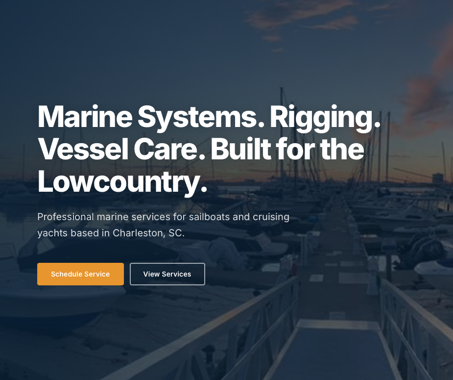
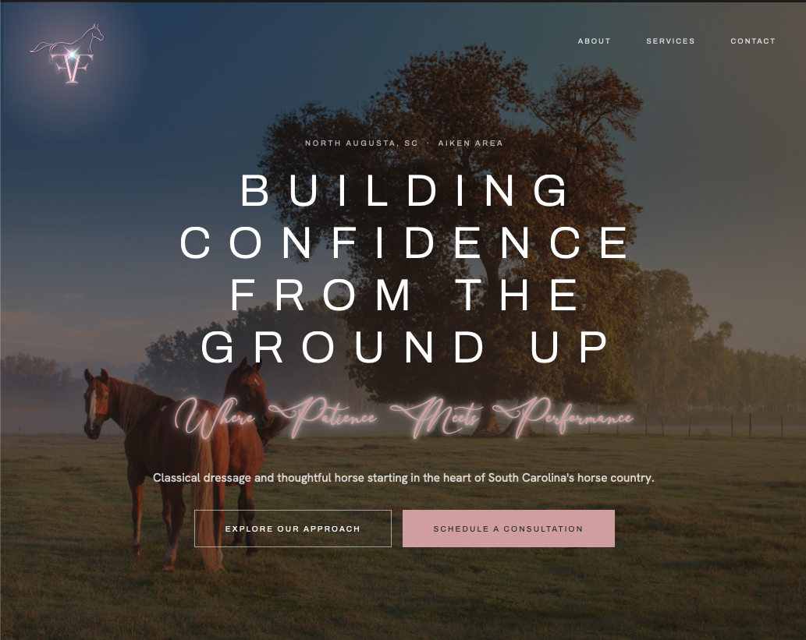
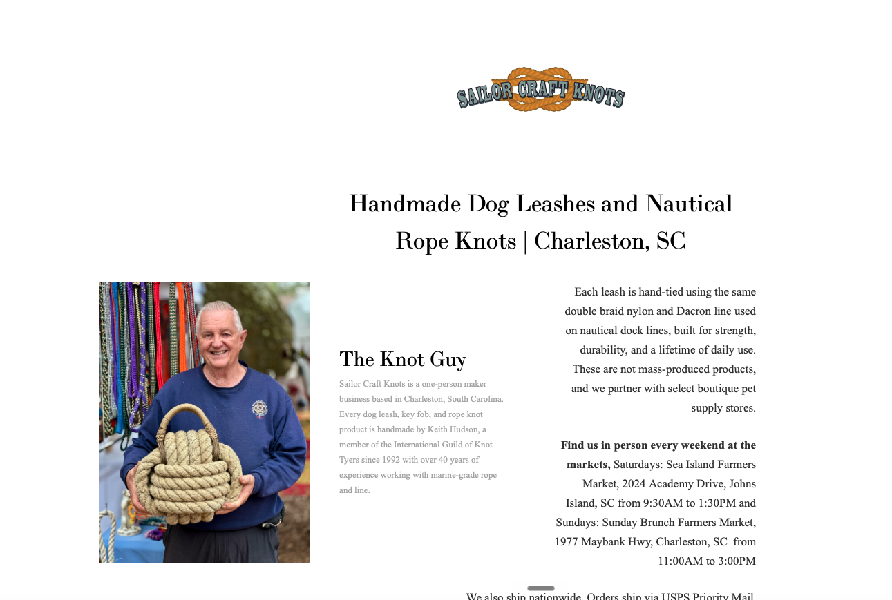
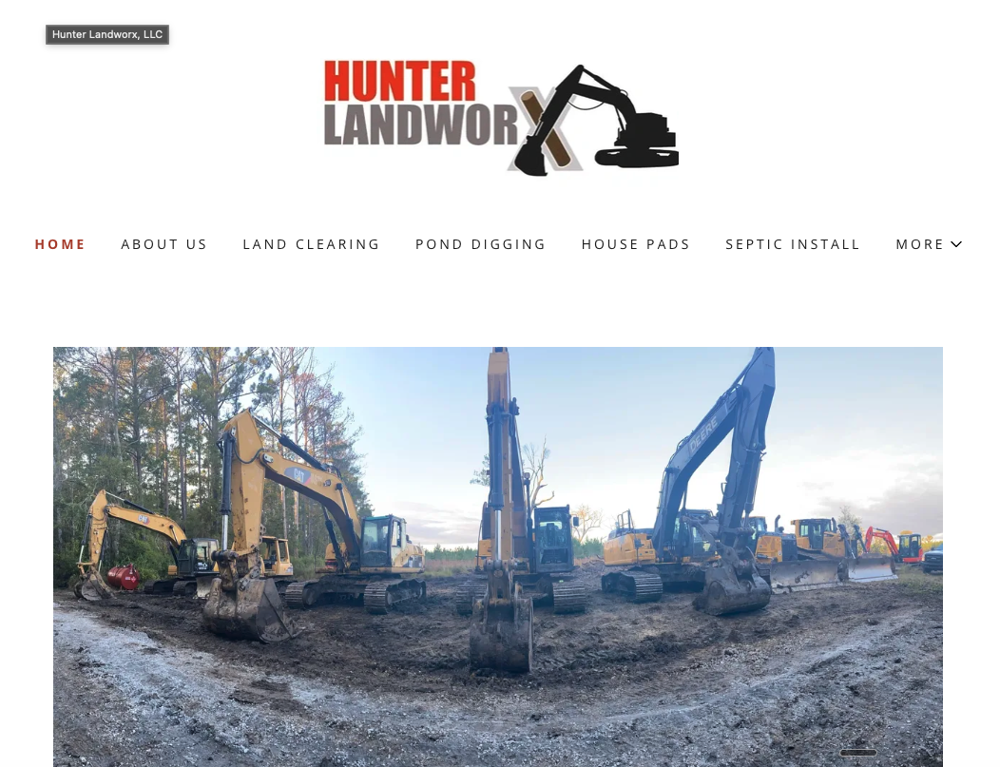
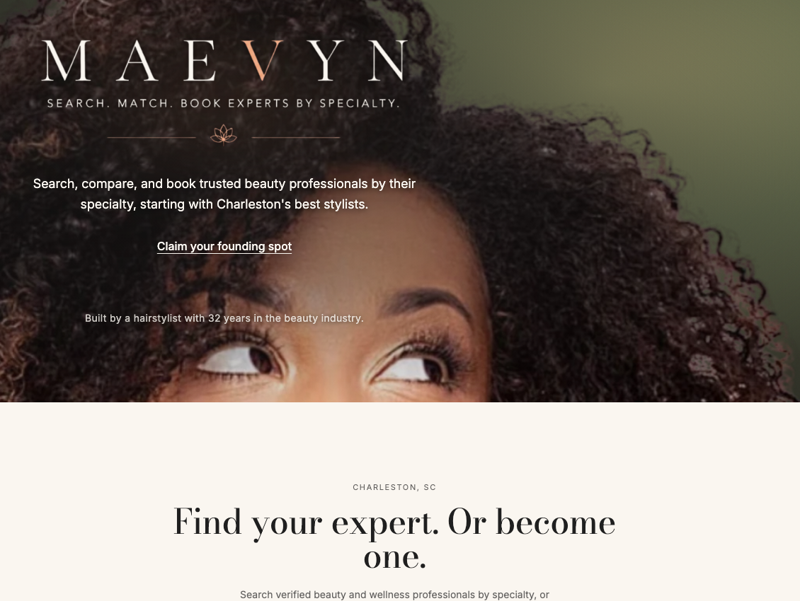
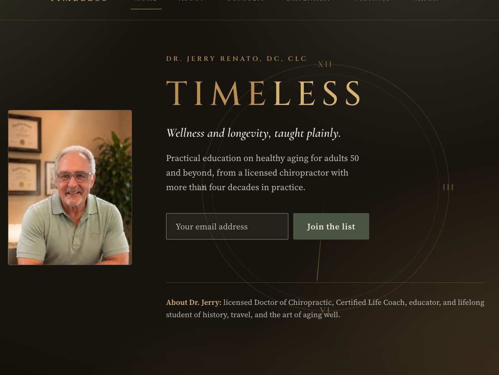

Sean Carroll Yachting
ARO refresh for a mobile marine service in Charleston. Score moved from 87 to 94. All four major AI platforms now recommend it by name when buyers search for marine services in the area.
View site scyachting.com →
Frostbite Farm
Brand new site build and ARO foundation for a classical dressage and horse starting operation in South Carolina's horse country. Structured from day one so AI recommends the farm when buyers search for dressage trainers in the Aiken area.
View site fbfnaugusta.com →
Sailor Craft Knots
ARO refresh for a one-person maker business hand-tying dog leashes and nautical rope knots in Charleston. Moved from 55 to 76 on "best british slip leash in Charleston SC." Scores 95 on "custom dog leashes in Charleston SC."
View site sailorcraftknots.com →
Hunter Landworx
ARO refresh for a land clearing and site work operation. Restructuring so AI recommends them for land clearing, pond digging, house pads, and septic installs across South Carolina. In progress.
View site hunterlandworx.com →
Ambrose Family Farm
Optimized the farm's site so AI recommends it for local CSA and farmstand searches across all four platforms. Ranking first for "farmstand and CSA Charleston SC."
View site ambrosefamilyfarm.com →Myles Trudell Architect
Full ARO build for a residential architecture firm: schema markup, FAQ layer, GBP sync, and SEO alignment rebuilt from audit data. All four AI platforms now recommend the firm by name.
View site mylestrudell.com →Out on a Limb
On the same buyer query, "best aerial gymnastics classes in Charleston," Out on a Limb moved from 54 (2 of 4 models) to 85 (4 of 4) following a full site rebuild.
View site outonalimbcircus.com →MAEVYN
A curated two-sided marketplace connecting clients with beauty and wellness professionals by specialty. Full custom product build: matching engine, booking flow, and schema built in from day one. In progress.
View site maevyn.pro →
TIMELESS by Dr. Jerry Renato
Wellness and longevity education brand built for Dr. Jerry Renato, DC, CLC. Positioning, site, and AI-recommendation structure built together from the start instead of bolted on after launch.
View site timelessbydrjerry.com →
Dr. Dorree Lynn
Rebuilt a site riddled with broken links into a clean, structured, AI-readable presence. Engagement predates the ARO Index; proof is the before and after.
View site drdorree.com →